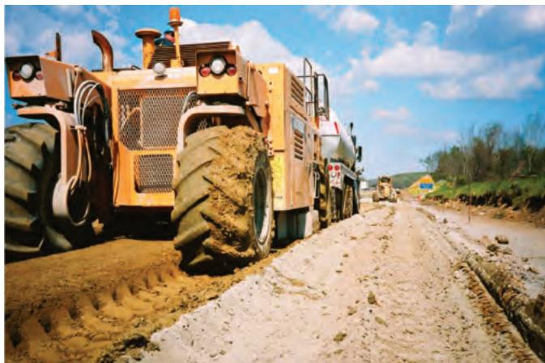
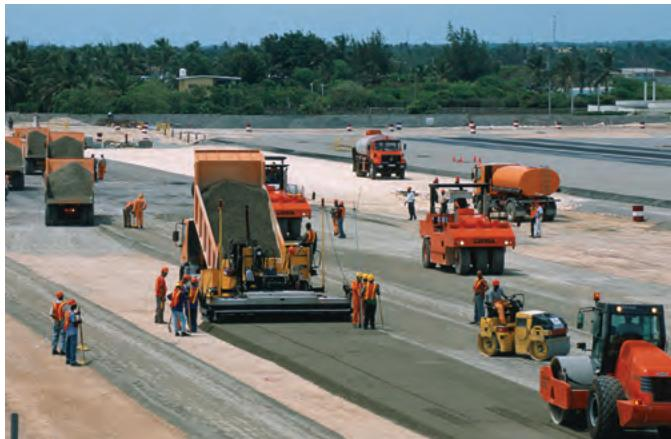
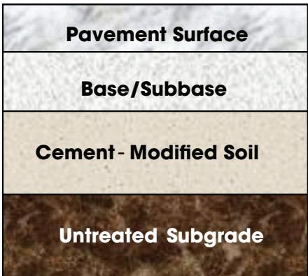
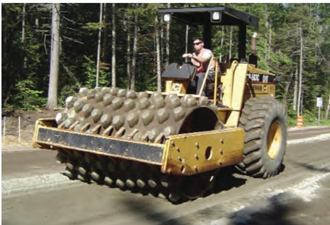
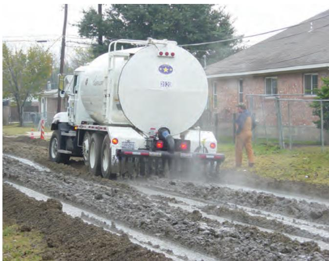

Cement-Modified Soils Subgrade Improvement
Cement‑modified soils are granular soils blended with a modest amount of Portland cement to create a treated subgrade that functions as a stable, weather‑resistant work platform beneath the pavement’s base or subbase layers [2]. The limited cement content chemically binds particles while physically reducing plasticity and limiting moisture‑induced volumetric changes, which raises cohesion, bearing strength, stiffness and overall stability of the subgrade [2]. By mitigating expansion in poor‑quality soils and providing higher load‑support capacity without extensive excavation or replacement, this improvement enhances pavement performance while allowing cost‑effective use of locally available materials [2].
Sources (2)
Material purpose and applicability
Cement‑modified soils are granular soils blended with cement to create a treated subgrade that acts as a stable working platform beneath the pavement’s base or subbase layers. Cement-modified soils are soils or manufactured aggregates blended with a small proportion of Portland cement, creating a subgrade material that exhibits reduced plasticity, limited moisture‑induced volume change, higher bearing strength and improved stability. By providing a weather‑resistant work platform and a stronger, permanent pavement layer, CMS enhances the support capacity of the pavement system while often avoiding costly removal or replacement of poor‑quality native soils. [2]
The following figure illustrates the equipment used to achieve this in-place mixing process.

A large yellow Pulvermizer mixing cement into the soil subgrade. [2]The image shows a heavy-duty construction vehicle, identified as a Pulvermizer, operating on an unpaved road surface.
[2] — Description (pp. 66–67), Typical Applications (p. 66)
Composition and characteristics
Cement-modified soils for subgrade improvement are produced by creating a cement‑treated base (CTB) in which the cement is mixed with the on‑site soil or with locally sourced borrow material. The resulting layer consists essentially of cement combined with native soil or manufactured aggregate, forming a homogeneous mixture that behaves less plastically and resists moisture‑induced swelling. By combining small amounts of cement with soils, plasticity is reduced, volumetric changes due to moisture content are minimized, bearing strength is increased, and stability is improved. An additional benefit is an improvement in strength and stiffness, yielding higher bearing capacity, cohesion and overall stiffness for a more stable, weather‑resistant subgrade platform. [2]
The following figure illustrates the placement of plant-mixed cement-treated base on a prepared subgrade.

Placement of plant-mixed CTB on prepared subgrade [2]The image displays a large-scale construction operation where heavy machinery is placing and compacting a cement-treated base (CTB) layer. A paver machine is spreading the mixture while vibratory-steel rollers follow to achieve compaction, which creates a stable platform for pavement layers.
[2] — Description (pp. 66–67), Solution (p. 56)
The performance of a cement-modified soil subgrade depends on what is mixed together and how much cement is used: changing the type of soil or manufactured aggregate (composition) alters the baseline plasticity and moisture response, while adjusting the cement proportion directly controls those same traits. Adding even a small amount of Portland cement reduces plasticity, limits volume change with moisture, and raises bearing strength and overall stability; increasing the cement content further boosts strength to meet specification limits and provides freeze‑thaw durability as seen in cement‑treated bases. Consequently, poorer‑quality soils benefit most from higher cement ratios to gain cohesion and stiffness, whereas modest additions are sufficient when the goal is simply to curb expansion and improve workability. [2]
[2] — Description (pp. 66–67)
Key material properties
Performance of cement‑modified soils depends on several key properties. Reducing plasticity and minimizing moisture‑induced volumetric changes are essential physical traits that limit swelling and shrinkage in the subgrade. The addition of a small amount of Portland cement provides chemical binding that improves cohesion, while the resulting increase in bearing strength, stiffness, and overall stability gives a weather‑resistant, stronger pavement layer capable of supporting loads. Although freeze‑thaw durability is emphasized for higher‑cement mixes (CTB), the primary performance drivers for CMS are these physical and mechanical improvements. [2]
[2] — Description (pp. 66–67)
Behavior and mechanisms
Cement-modified soils, made by mixing native soil or manufactured aggregate with a small proportion of Portland cement, exhibit increased bearing strength and improved stability under load because the cement reduces plasticity and binds particles together. The limited cement content also minimizes volumetric changes, so moisture variations cause only slight expansion or shrinkage, enhancing cohesion in otherwise poor soils. Unlike cement‑treated base, CMS is not required to meet the same strength and durability specifications for freeze‑thaw resistance, indicating that its performance under temperature extremes is less explicitly guaranteed. [2]
The typical cross-section of this material application is illustrated below.

Typical cross-section with CMS [2]The figure displays a vertical stratigraphy of pavement layers, identifying the third layer from the top as “Cement - Modified Soil” situated between the base/subbase and the untreated subgrade. This visual arrangement illustrates how cement-modified soils are used to improve material properties in the subgrade, functioning as a treated layer beneath the pavement’s base or subbase layers.
[2] — Description (pp. 66–67)
The behavior of cement‑modified soils in subgrade improvement is governed by physical, chemical and mechanical mechanisms. Physically, the addition of a small amount of Portland cement reduces soil plasticity and limits volumetric changes caused by moisture fluctuations. Chemically, cement hydration creates binding agents that increase cohesion among particles, mitigating expansion in wet conditions. Mechanically, these bonds raise bearing strength, stiffness and overall stability of the treated layer. [2]
[2] — Description (pp. 66–67)
Durability and deterioration
Durability of cement-modified soils is chiefly challenged by freeze‑thaw cycling and moisture‑induced volumetric changes; CTB must be formulated to resist freeze‑thaw damage, while CMS relies on modest cement additions to mitigate expansion from moisture variations and to provide sufficient strength and cohesion. Insufficient cement content can leave the subgrade vulnerable to these mechanisms, reducing long‑term performance. [2]
[2] — Description (pp. 66–67)
The tendency of a cement-modified soil subgrade to deteriorate is largely controlled by the proportion of cement and the moisture environment it experiences. Low cement content leaves the mix more plastic and vulnerable to volumetric changes when moisture varies, so expansion and loss of strength are more likely, especially under freeze‑thaw cycles for which CTB’s higher cement dosage is intended. Increasing the cement percentage reduces plasticity, limits moisture‑induced swelling, raises bearing strength and provides the durability required to resist freeze‑thaw damage, thereby lowering susceptibility. Consequently, material with sufficient cement to meet specified strength and durability criteria and exposure to relatively stable moisture conditions improve long‑term performance. [2]
[2] — Description (pp. 66–67)
Material interactions and compatibility
Cement-modified soils work by blending a modest amount of Portland cement with the existing soil or manufactured aggregate, allowing the cement to react with mineral particles and create a binding matrix. This interaction reduces plasticity, limits moisture‑driven volumetric changes, and enhances cohesion, bearing strength and stiffness, resulting in a more stable, weather‑resistant subgrade that can support construction loads without extensive removal of poor‑quality soils. [2]
The following figure illustrates the sheepsfoot roller used for compaction in this process.

Sheepsfoot roller used for compaction [2]The image displays a yellow sheepsfoot roller with a drum covered in protruding lugs, operated by a driver on a paved surface.
[2] — Description (pp. 66–67)
Selection, specification, and improvement
The selection of a cement‑modified soil (CMS) or cement‑treated base (CTB) for subgrade improvement is governed by three principal criteria. First, the availability of suitable existing soils or locally sourced borrow material determines whether a CTB can be formed: “A cement-treated base (CTB) using existing soils or locally available borrow material.” Second, the intended roadway or facility type and its loading conditions drive the choice of CMS as a treated subgrade platform; it is specified for highways, streets, local roads, shoulders, commercial/lightweight pavements, airfields, and heavy‑industrial uses because “Cement-modified granular soils can be used as a treated subgrade and working platform beneath a base or subbase.” Third, the condition of the native material influences whether a modest cement addition (CMS) or a higher‑cement CTB is required. When soils are of poor quality—high plasticity, moisture‑sensitive expansion—a small proportion of Portland cement is added to reduce plasticity, limit volumetric changes, and increase cohesion and bearing strength: “The most common application of CMS is as an option for subgrade material when existing or available soils are of poor quality” and “small amounts of cement are added to mitigate expansion due to moisture variations and improve cohesion caused by poor soils.” If higher strength or freeze‑thaw durability is needed, a CTB with greater cement content may be specified. These criteria together balance performance demands, material availability, and cost efficiency. [2]
The practical implementation of these treatments begins with the application of cement slurry to the prepared ground surface, as illustrated in the following figure.

Application of cement slurry to the subgrade surface using a tanker truck prior to mixing. [2]A white tanker truck is shown spraying liquid onto a muddy roadbed, which corresponds to applying cement slurry on grade prior to mixing.
[2] — Description (pp. 66–67), Solution (p. 56), Typical Applications (p. 66)
Using a cement‑treated base (CTB) that incorporates existing soils or locally sourced borrow material can improve subgrade performance by providing an alternative to imported aggregates and allowing better control of the mix composition. Performance of cement‑modified soils can be enhanced by adjusting the proportion of Portland cement and, where appropriate, substituting or supplementing natural soil with manufactured aggregates; a higher cement content—approaching that used in cement‑treated base—provides greater strength, stiffness, and freeze‑thaw durability while still reducing plasticity and moisture‑induced volume change. Ensuring the mix meets specified strength values through proper proportioning and thorough mixing serves as a quality control step that mitigates the material’s inherent weaknesses such as expansion under varying moisture conditions. [2]
[2] — Description (pp. 66–67), Solution (p. 56)
Performance evaluation and implications
Cement-modified soils enhance pavement performance by lowering subgrade plasticity and limiting moisture‑induced volume changes, which raises bearing strength and stability under traffic loads. The resulting increase in stiffness and cohesion creates a durable, weather‑resistant platform that supports the permanent pavement layer and reduces settlement or freeze‑thaw damage, allowing designers to use poorer native soils without excessive thicknesses. Because the subgrade can be treated in place, construction avoids extensive excavation and replacement, saving time and money while also reducing future maintenance needs. [2]
[2] — Description (pp. 66–67)
References
References
- P. Taylor, T. Van Dam, L. Sutter, and G. Fick, "Integrated Materials and Construction Practices for Concrete Pavement: A State-of-the-Practice Manual," National Concrete Pavement Technology Center, Rep. Part of InTrans Project 13-482; TPF-5(286), 2019. [Online]. Available: https://www.cptechcenter.org/wp-content/uploads/2019/12/IMCP_manual.pdf
- S. Garber, R. O. Rasmussen, and D. Harrington, "Guide to Cement-Based Integrated Pavement Solutions," Institute for Transportation, Iowa State University, 2011. [Online]. Available: https://www.cptechcenter.org/wp-content/uploads/2018/08/IPS.pdf